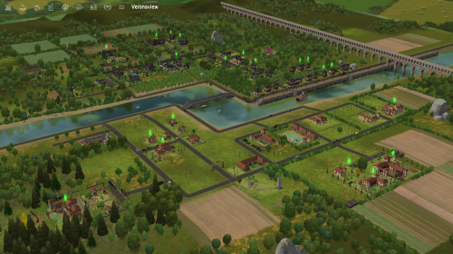

The Sims 2 Guide
Welcome to Veronaville

Veronaville
Veronaville is designed to evoke a classic European village ambiance with its cobblestone streets, quaint
architecture, and lush greenery. The neighborhood is divided into distinct districts, each contributing to
its overall charm and cultural richness. Players will find Tudor-style homes, picturesque gardens, and
scenic views of rolling hillsides, creating a serene and idyllic backdrop for gameplay.
Neighborhood
Veronaville encourages players to explore themes of love, rivalry, ambition, and family dynamics—all of
which are central to Shakespearean drama. Players can navigate romantic relationships, manage family
conflicts, and uncover hidden secrets that span generations. The neighborhood's rich storytelling potential
allows players to create intricate narratives that unfold against the backdrop of Shakespearean-inspired
drama and romance.
The Capp Family
Led by the patriarch, Patricio Capp, the family is characterized by their strong sense of tradition and
pride. Patricio upholds the longstanding feud with the Monty family, embodying a stern and authoritative
demeanor that reflects his commitment to family honor. His wife, Isabella Capp (formerly Isabella Monty),
adds complexity to the family dynamic as she navigates her divided loyalties between her birth family and
the Capps. Their children, Hermia and Tybalt Capp, each play pivotal roles within the family's narrative.
Hermia, known for her intelligence and beauty, navigates romantic entanglements and familial expectations,
while Tybalt's fiery temper and unwavering loyalty fuel the ongoing tensions with the Montys. The Capp
family's storyline in Veronaville is marked by themes of rivalry, ambition, and the complexities of family
loyalty, offering players a rich tapestry of drama and intrigue to explore within the neighborhood's
Shakespearean-inspired setting.
The Monty Family
Led by the patriarch, Patrizio Monty, the family embodies a rich heritage of tradition and pride. Patrizio
is a charismatic figure with a deep-seated rivalry with the Capp family, reflecting the historical feud
between the Montagues and Capulets. His wife, Isabella Monty (formerly Isabella Capp), adds complexity to
the family dynamic as she navigates her dual identity between her birth family and her marital ties. Their
daughter Bianca Monty is characterized by her beauty and romantic aspirations, often caught in the midst of
Veronaville's dramatic love affairs. The Monty family's storyline is marked by themes of love, betrayal, and
loyalty, as they navigate the complexities of family honor and their place in the neighborhood's intricate
social fabric.
A Shakespearean World
The families in Veronaville, such as the Monty and Capp families, mirror the feuding Montagues and Capulets
from "Romeo and Juliet." The ongoing feud between these families serves as a central storyline, echoing
themes of love, betrayal, and familial conflict portrayed in Shakespeare's tragedy. Similar to Shakespearean
dramas, characters in Veronaville navigate complex relationships and moral dilemmas. Romantic entanglements,
loyalty to family honor, and the consequences of societal expectations are recurring themes that players can
explore through gameplay.